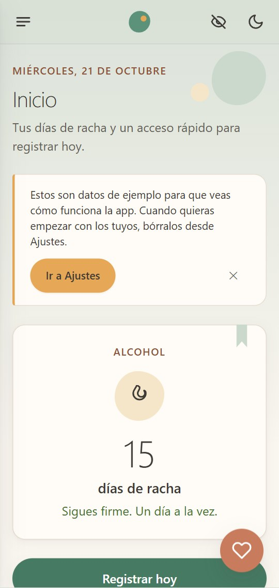
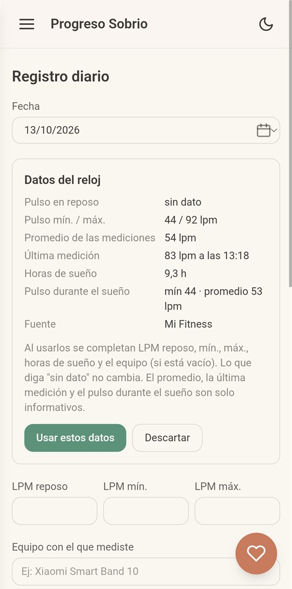

App gratuita · Hecha en Chile
Un día a la vez. Lo que anotas se queda contigo.
Un diario privado para acompañar tu abstinencia: tu racha, cómo dormiste, las ganas de consumir y lo que te ayuda. Sin juicios, sin diagnósticos y sin enviar nada a internet.
- Sin crear cuenta
- Funciona sin internet
- Código abierto
¿Ya usabas la app en progreso-sobrio.vercel.app? Tus datos siguen ahí. Para traerlos, descarga un respaldo en Ajustes de esa dirección y restáuralo en la nueva.

Nuestra promesa
Lo que anotas no sale de tu teléfono.
Alguien en recuperación necesita un lugar seguro donde ser honesto. Por eso la app no tiene servidor que guarde información de nadie.
-
Sin servidor
Todo se guarda solo en tu dispositivo. No hay base de datos central ni cuentas.
-
Sin seguimiento
No usamos analítica ni publicidad. Nadie sabe quién usa la app ni qué registra.
-
Tus datos son tuyos
Puedes descargar un respaldo o un Excel cuando quieras, y decidir con quién compartirlo.
Pruébalo en modo avión
Instala la app, activa el modo avión y ábrela: funciona igual. La versión Android ni siquiera tiene permiso para conectarse a internet.
Transparencia
La página y la versión web están alojadas en Vercel, que, como todo hosting, registra datos técnicos de conexión (por ejemplo, la IP). Nosotros no los usamos ni los analizamos.
El formulario de experiencias usa Google Forms: no pedimos nombre ni correo, y aplica la política de privacidad de Google.
El detalle de qué se guarda, dónde y cómo ejercer tus derechos está en la política de privacidad.
Qué hace
Anotar tu día toma menos de 30 segundos.
Racha de sobriedad
Por sustancia, varias en paralelo. Es lo primero que ves al abrir la app.
Registro diario
Cómo dormiste, el craving, tu energía y ánimo, la actividad, el pulso en reposo, tus hábitos y notas.
Gráficas e historial
Calendario y tabla editables, y la evolución del pulso, el sueño y la actividad.
Qué te ayuda
Relaciones simples entre tus datos, en lenguaje llano. Nunca un diagnóstico.
Datos del reloj Android
Trae el pulso y el sueño de tu pulsera desde Health Connect. Tú decides si los usas.
Red de apoyo
Tus contactos de confianza y la línea 1412 de SENDA, siempre a un toque.
Excel para tu profesional
Exporta tu registro en un formato legible para llevarlo a tu terapeuta, si quieres.
Respaldo completo
Guarda y restaura todos tus datos para cambiar de teléfono sin perder nada.

Para quién es
Para quien se recupera y para quienes acompañan.
-
La persona en recuperación
Un espacio privado para ver su avance día a día, sin presión ni castigos si un día cuesta más.
-
Quien acompaña
Familia o amistades que quieren apoyar sin vigilar. La persona decide qué compartir y cuándo.
-
Centros y profesionales
Un registro entre sesiones que el paciente puede llevar a la consulta en Excel, sin que la institución maneje datos.
Centros y fundaciones
Úsala con tus pacientes, sin costo.
Gratis y sin licencias. El código es abierto, con licencia MIT.
Tu institución no guarda datos de salud. Cada paciente tiene su información en su propio teléfono.
Tono cálido, no clínico. Muestra datos sin calificarlos como buenos o malos.
Queremos adaptarla a tu programa. Cuéntanos qué mediciones te sirven para seguir el progreso de tus pacientes.
Conversemos
Si diriges o trabajas en un programa de tratamiento en Chile, te mostramos la app en una reunión corta, con una pulsera conectada.
Comunidad